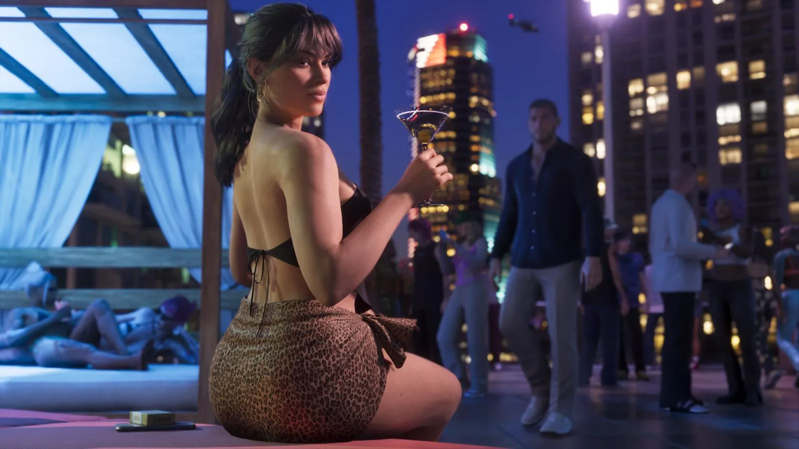

Советы новичку GTA 6: 20 вещей, которые стоит знать с первого часа
Опубликовано:

- Миссии нельзя переиграть — делайте ручные сохранения, слотов 15.
- С собой можно носить до $20 000 наличными; остальное переводите на BuckMe в банкомате — при смерти наличные можно потерять.
- Полиция ищет по приметам: одежда, головной убор, очки, машина. Смените что-то одно — и вас сложнее узнать.
- Бинокль и приложение WAiNK нужны для 100%: животные и машины, изученные по сюжету, засчитываются.
Перед стартом
- Закрепите мини-карту. В настройках можно сделать так, чтобы она не пряталась и не выскакивала.
- Переключите единицы. По умолчанию — футы, фаренгейты и фунты. В настройках можно поставить метры, цельсии и килограммы.
- Выберите уровень жестокости. Расчленение вернулось в серию, и его можно отключить в настройках.
Сохранения
Главное, что надо знать до первой миссии: в GTA 6 нет переигровки миссий и нет медалей за задания. Пройденную миссию заново не запустить, поэтому выбор в сюжете и пропущенные предметы — навсегда. Выход — ручные сохранения: в игре 15 слотов. Хорошее правило — отдельное сохранение в начале каждой главы и перед большими заданиями.
Если в миссии сломалась личная машина, сохраните игру вручную и загрузите это сохранение: герой появится дома, а машина будет стоять у входа (совет PowerPyx).
Деньги
- Лимит наличных — $20 000. Деньги делятся на наличные и счёт BuckMe. С полным кошельком новые деньги не подобрать, а если погибнуть с крупной суммой, её можно потерять. Регулярно переводите деньги на BuckMe через банкомат.
- Главы 1–2 — без спешки. Серьёзные деньги начинаются в главе 3: там появляются скупщики Tyrone и Yasmani, банки и заказы Рэнди на дорогие машины. В начале хватит на одежду и стрижку.
- Награда может прийти по почте. Пока у Джейсона нет банковского счёта, деньги за задания приходят в почтовый ящик у дома — например, $600 за миссию Lab Fees.
- Краденое — в сумке. Наркотики, украшения и меченые купюры носятся в сумке, её можно положить в багажник и потом сдать скупщику (зелёные значки на карте).
Полиция и приметы
Полиция в GTA 6 ищет не «игрока со звёздами», а человека по описанию. В правом верхнем углу экрана во время розыска горят значки: одежда, головной убор и очки, машина. Красный значок — полиция эту примету знает, белый — нет.
- Проще всего сменить машину. Это обычно самый быстрый способ сбросить примету.
- Шапка и очки — через колесо предметов. Зажмите L1 (LB), листайте R1 (RB) до головных уборов и очков и снимите их — значок станет белым.
- Запасной наряд в багажнике. В гардеробе дома можно переложить одежду в багажник машины и переодеться прямо после погони.
- Пригнитесь за рулём. Если зажать ○ (B) во время езды, герой пригибается и его сложнее узнать.
- Респрей. Pay ’n’ Spray перекрашивает машину — полиция перестаёт её узнавать.
- Не стреляйте в полицейских и прохожих. Это двигает криминальный профиль к уровню Irredeemable — тогда полиция может открыть огонь сразу.
Как устроен розыск подробно — в карточке Розыск.
Бой и здоровье
- Zombix — аптечка. С собой можно носить до 5 штук, использовать через колесо предметов (L1 + □ / LB + X). Продаются в магазинах у дома.
- Репутация зависит от того, как вы стреляете. Выстрелы по ногам и рукам — Hardened, скрытность — Professional, убийства — Psychopath, а убийства полицейских и мирных — Irredeemable.
- Глушитель — в приоритет. Тихая стрельба задерживает приезд полиции и даёт время обыскать точку банды (Inven Global).
- Еда и напитки работают как баффы. Еда временно повышает максимум здоровья, напитки — выносливость и Focus.
- Спортзал. С главы 3 можно записаться в зал: силу и выносливость стоит качать вместе, прогресс виден в приложении здоровья в телефоне. 100 тренировок открывают чит на бронежилет.
Машины и поездки
- Следите за бензином и двигателем. У машин есть топливо и «здоровье» двигателя. Мелкий ремонт делают на заправке, серьёзный — в автосервисе.
- Scooter Bros привезёт машину. Приложение доставляет вашу машину (уже отремонтированную) куда скажете — за деньги; премиум-подписка даёт три бесплатные доставки в день.
- Нет телепорта по карте. Есть приложение такси RideMe: чаевые $5 (до двух раз) — водитель едет быстрее, $100 — поездка пропускается.
- Автопилот. Если зажать ↓ на крестовине, включается кинокамера и машина едет сама — строго по правилам и может застрять в пробке.
- Машина под задачу. Внедорожник крепкий и вмещает добычу, грузовик нужен для заданий вроде вырывания банкоматов. Держите в гараже не только спорткары.
- Свою машину сначала не поменять. В главе 1 угнанную машину нельзя сделать личной — это откроется в главе 2. Улучшения старой машины потом пропадут.
Двое героев
- Просите напарника. Когда Джейсон и Лусия вместе, зажмите → на крестовине: можно попросить уйти от полиции, сесть за руль или продать краденое (выйдет чуть дешевле, чем у скупщика).
- Инвентари раздельные. Купленное оружие получают оба, но модификации, патроны и аптечки у каждого свои — проверяйте обоих перед делом.
- Время вместе тоже считается. Часы с напарником, занятия и ограбления вдвоём открывают фильтры-читы после финала.
Что собирать с первого часа
Многое для 100% можно делать по ходу сюжета — оно засчитывается сразу:
- Животные. Бинокль из колеса оружия, зажать R1 (RB) — животное изучено. Для 100% нужно 100 из 255 видов, охотиться не обязательно.
- Машины. Приложение WAiNK (зажать ↑), навести на машину, зажать R1 (RB). Нужно 200 из 277 базовых моделей, включая лодки и самолёты.
- Кокаиновые фламинго. Розовые садовые фламинго с чёрно-белым клювом — стреляйте. Нужно 100 из 125.
- Карточки. 18 наборов, 480 карточек: в жёлтых телефонных будках на стенах, в ящиках для инструментов и внутри зданий.
Полный список — в чек-листе 100% и разделе Коллекционки.
- Шум в Леониде — подсказка: случайные события не отмечаются на карте, их находят на слух.
- Пешком через всю карту Леониды журналисты Kotaku шли 3 часа 21 минуту — мешали аллигаторы и обрывы.
Частые вопросы
Можно ли переиграть миссию в GTA 6?
Нет: переигровки миссий нет. Делайте ручные сохранения — их 15.
Сколько денег можно носить в GTA 6?
До $20 000 наличными. Остальное — на счёте BuckMe через банкомат.
Как уйти от полиции в GTA 6?
Смените примету, которую знает полиция: машину, одежду, шапку или очки. Значки приметы — справа вверху; белый значок значит, что примету не знают.
Есть ли быстрое перемещение в GTA 6?
Телепорта по карте нет. Есть такси через приложение RideMe: за $100 поездку можно пропустить.
Источники: Inven Global, «13 Beginner Tips for GTA 6 I Wish I Knew from the Start», 19.11.2026; PowerPyx, прохождения миссий Gone Fishing, Lab Fees, Just a Scratch, Unwanted Attention, 19.11.2026; GTABase, «GTA 6 100% Completion Guide», 19.11.2026; Push Square, «GTA 6: Chapters & Story Missions», 19.11.2026; VGTimes (Kotaku, тест пешком через карту), 18.11.2026.
Каждый день — новости, фишки и секреты GTA 6 за 30 секунд. Подписывайтесь:
YouTubeInstagramTikTok